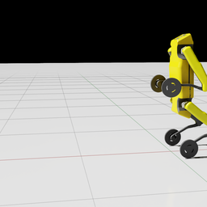
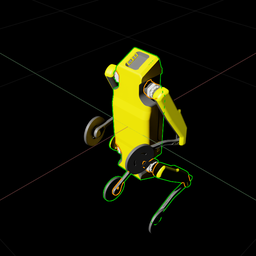

Project goal
Teach a statically-unstable robot to keep itself standing, then to drive on command. The segway-style wheeled quadruped balances pitched up on its two rear wheels; left to itself it tips over. The control problem is a 3D inverted-pendulum / self-balancing task: hold the torso near an upright target base height of 0.828 m and don’t fall, then track a commanded forward and yaw velocity while staying up. It is framed as a Markov Decision Process and solved end-to-end with PPO, with no hand-tuned balancing controller in the loop.
Two things make it a genuinely hard control problem rather than a toy. First, it is underactuated: only four joints are actuated, the two rear wheels in velocity control and the two front thighs in position control (the front wheels are fixed), yet the policy must stabilise the whole articulated body. Second, the deployed policy is driven by onboard sensing only: no camera, no external tracking, no privileged simulator state. Balance has to be inferred from the body’s own motion and corrected before the robot passes the point of no return.
How it works & architecture
A modern Isaac Lab external project. The task is built as a standalone
NVIDIA Isaac Lab 2.3.2 external project against the modern
isaaclab namespace, with an installable package under
source/wheeled_quadruped/. The stack is rsl-rl 3.0.1,
Isaac Sim 5.1, PyTorch 2.7, and
Python 3.11. Physics steps at 200 Hz and control at
50 Hz (decimation 4), with 20-second episodes
(1000 control steps).
Asymmetric actor-critic (the headline design choice). The deployed policy (the actor) observes only signals a real robot could obtain onboard: base angular velocity (IMU), projected gravity (IMU), front-thigh joint positions, joint velocities, and the last action, 16 values in total. The critic additionally sees privileged, simulation-only state, base linear velocity and base height (20 values), purely to reduce training variance, and it is discarded at deployment. This keeps the policy honest for eventual sim-to-real, because base linear velocity is not measurable onboard: the actor never learns to lean on something the hardware cannot give it.
Four actuated joints, two control modes. The two rear wheels are driven in joint-velocity mode, while the two front thighs are driven in joint-position mode. Spin the wheels to catch the base, angle the front thighs to shift the centre of mass: that split is the mechanical vocabulary the policy learns to balance and drive with.
A redesigned reward suite (and a sign bug fixed while learning). The reward combines a base-height term, a flat-orientation term, velocity damping, effort and smoothness penalties, and a wheel-spin penalty. The most instructive fix: the base-height term is a squared-error cost, so it needs a negative weight (−20.0). The original prototype had it positive, which literally rewarded the robot for drifting off its target height. Flipping the sign is a small change with a large effect, and a sharp reminder that in RL the reward is the specification: get its sign wrong and the agent optimises the wrong thing perfectly.
Domain randomization. To make the policy robust (and to keep the sim-to-real story credible), training randomizes per-body friction and restitution, adds mass to the base, randomizes resets, and applies periodic velocity pushes so the policy learns to recover from disturbances rather than memorising a single trajectory.
The learner is PPO. Actor and critic are MLPs with hidden layers [128, 128] for balance and [256, 128, 64] for velocity, with ELU activations, trained across 2048 parallel environments on a single RTX 4090 Laptop GPU (16 GB).
The tasks, including rough terrain
Six registered tasks, four trained policies. The project registers six Gymnasium tasks and ships four trained policies: balance (stand upright and hold), velocity (drive to a commanded forward and yaw velocity while balancing), and rough-terrain variants of both. The rough tasks swap the flat ground for a wheel-traversable generated terrain (random roughness of roughly 1 to 6 cm plus gentle slopes, no stairs). The velocity-rough task adds a terrain-difficulty curriculum that promotes robots to rougher tiles as they improve, so the policy is always training near the edge of what it can handle.
Results & analysis
The demo video at the top shows the trained velocity policy driving across rough terrain. Every number below is from simulation; there is no hardware yet, and no sim-to-real claim is made here.
Balance holds the full episode. The balance policy stays upright for the full 1000-step (20-second) episode. The velocity policy holds roughly 996 of 1000 steps while tracking the commanded velocity closely. On rough terrain both problems are harder, and the results are honestly lower: the policies stay up for roughly 90 to 95% of the episode while driving over bumps. That gap is reported as-is, not smoothed over: uneven ground is a strictly harder problem than the flat case.


A yaw-tracking tuning trade-off. A reward-tuning experiment on yaw tracking cut the flat velocity policy’s turning error by about 14% (measured as physical commanded-versus-achieved error), a clean win on flat ground. On rough terrain the same change traded off forward-speed tracking, so the rough policy kept the balanced weights. It is a small but honest illustration of a common RL reality: a reward change that helps in one regime can quietly cost you in another, and the right call is sometimes to keep the more balanced version.
Deliverables. The four policies are exported to ONNX and
TorchScript (the onboard-only actor, with the critic stripped) and committed in the
repository’s pretrained/ directory, so they can be loaded and run without
retraining. Alongside the code there is a 12-chapter, textbook-style project wiki
that derives the MDP, the PPO and GAE math, the reward design, and the sim-to-real reasoning.
Sim-to-sim validation (MuJoCo)
A policy trained in one simulator can quietly overfit that simulator’s contact solver and numerics, none of which exist on real hardware. The cheapest honest check is to run the same trained policy in a different physics engine. I took all four Isaac Sim (PhysX) policies and ran them unchanged in MuJoCo: the robot is rebuilt from its URDF (not copied from the Isaac scene), the observation and action conventions are matched exactly, and the exported actor runs in pure numpy, the same minimal inference path a real robot would use. Different engine, different contact model, different terrain: a genuine cross-engine test rather than a replay.
Three of the four policies transferred at 100%, surviving every episode in MuJoCo: balance, velocity, and balance on rough terrain. The hardest task, driving while balancing on rough terrain, stayed up about 96% of the episode on average while tracking its command closely, and it was the only policy that ever fell. That is exactly the signal a sim-to-sim check exists to give: not a binary “it works”, but a ranking of which policy sits closest to the edge of its robustness, and therefore which one most needs hardening before hardware.
One honest lesson along the way. My first MuJoCo rough terrain was actually
rougher than Isaac’s (high-frequency bumps instead of gentle slopes), and the hardest
policy fell far more often. Rebuilding the height field to be faithful to what the policy trained on
dropped its yaw error from 0.45 to 0.15 rad/s. The gap you measure is only as
trustworthy as the environment you measure it in. The full harness lives in
sim2sim_mujoco/.
Future work
- Recover the rough-terrain yaw gain without the trade-off: find a yaw-tracking reward shaping that improves turning on rough ground without costing forward-speed tracking, so the flat-ground win carries over.
- Sim-to-real deployment on hardware: take the onboard-only actor from simulation, now validated across a second physics engine, to a physical robot, the natural next step now that the deployed policy is already restricted to observations the hardware can actually measure.
Built on NVIDIA Isaac Lab (BSD-3-Clause), started from an online example repository
and substantially rebuilt as a standalone Isaac Lab 2.3.2 external project under the
isaaclab namespace. Released under the MIT License.